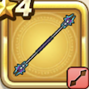

らせつのこん
攻略班 5.0点 / あしばらいなぎはらいしんくうげり
くわしい特徴
【レベル別習得スキル】 Lv1あしばらい（消費MP：4）敵1体に威力120%の体技ダメージを与えたまに転ばせる Lv8なぎはらい（消費MP：12）武器を振りまわして、敵全体に威力120%の斬撃ダメージを与える Lv20しんくうげり（消費MP：18）大気を切り裂く蹴りを放ち敵全体にバギ属性の150%の体技ダメージを与える Lv28鳥系へのダメージ+10% Lv36攻撃時+2%の確率で麻痺を与える Lv40攻撃力+8 【限界突破スキル】 1凸スキルの斬撃・体技ダメージ+5% 2凸スキルの斬撃・体技ダメージ+5% 3凸スキルの斬撃・体技ダメージ+5% 4凸スキルの斬撃・体技ダメージ+5%